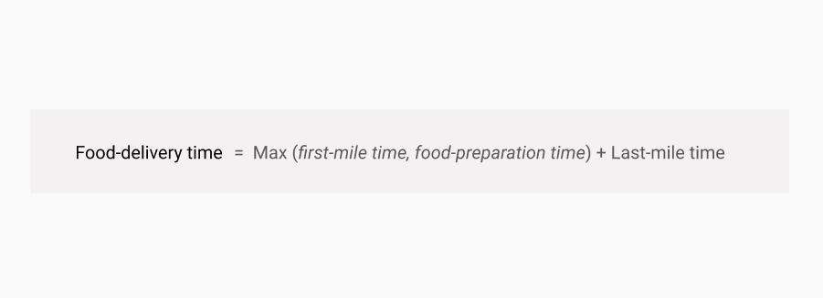
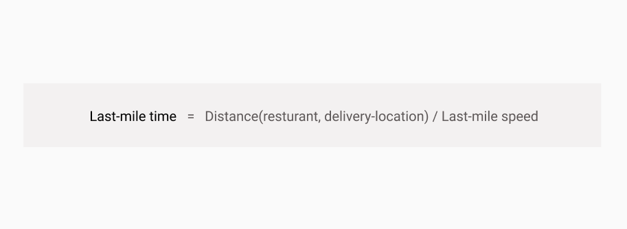
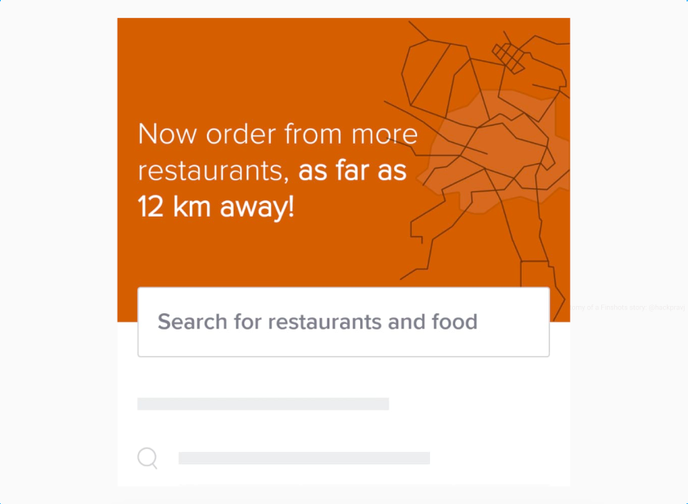
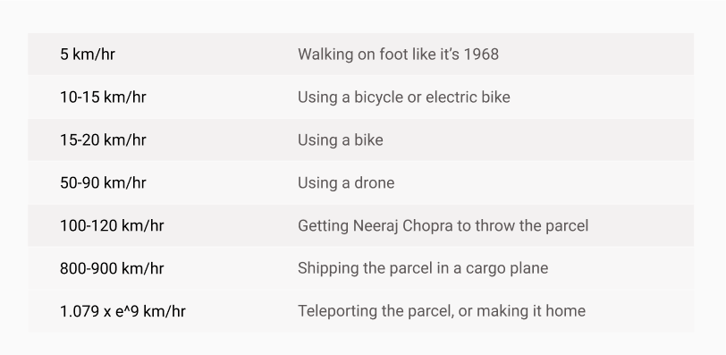
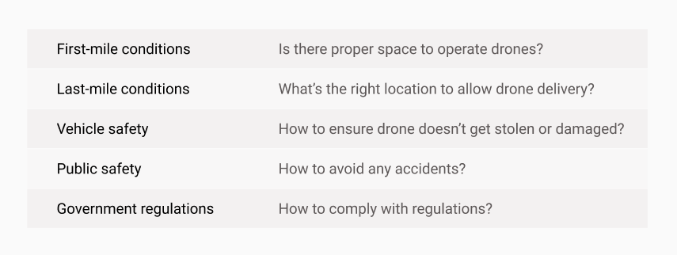
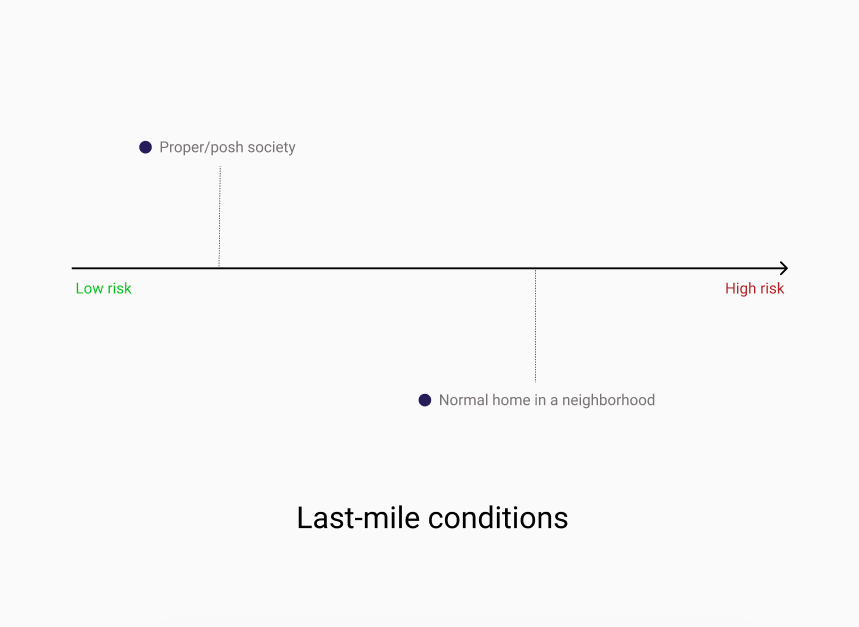
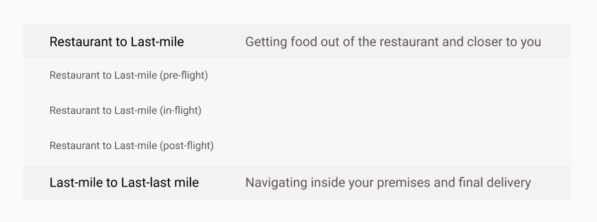

The title looks like a good interview question. So here is the right follow-up question, Why?
Let’s list down the contributing factors and follow up from there.
Have you ever been in a situation when you’re (hungry) about to place a food order and the application is showing you 40+ minutes to deliver? It’s a complete turn-off.
You can break down your order delivery timing in the following segments (reference).

Food delivery companies are already doing a lot to deliver it faster for you.
There are a lot of optimizations at work, though not all of them are focused on delivering food even faster for customers (reference).
After all, there is Physics and ground reality at play, affecting how fast your food is delivered.

To tackle the first factor (Distance), you are only shown restaurants close enough to you.
Here is Swiggy celebrating their launch (circa, June 2021) that allows you to order from restaurants that are at a distance.

On a side note, 12 km away! isn’t tempting enough, only if they showed me a famous restaurant I was missing out on.
Moving on, if we consider the second factor (Last-mile speed), it comes down to how fast is your food (and the delivery partners/executives are) moving around? Let’s visit some of the available options.

How fast the traffic moves depends not just on the vehicle, but where you live. In Bangalore, the Average Commute Speed ranges between 18-21 km/hr (reference).
Ultimately, Swiggy/Zomato wants to expand the Distance(restaurant, delivery-location) so you’ve more options to choose from (eventually leading to more orders or higher average order size), but they also want to increase the Last-mile speed.
So that customers like you and me can have that [insert your favorite food item here] just as we think about it.
The Deliverator stands tall, your pie in thirty minutes or you can have it free, take the delivery car, file a class-action suit. — Snow Crash
And if they can find a solution that ensures the Last-mile time isn’t increasing as they increase the distance, it’s a win-win. Drones fit somewhere here.
Work is already happening in this domain. Swiggy/Zomato and a few other entities have received approval to start testing the way their drone will deliver your food. (reference)
Now that we know it will bring a legit business advantage if we can get your food to travel at a higher speed, let’s think how will this happen?
There are many variables if we consider drone delivery as an option and the associated risks/challenges.

First-mile conditions
Last-last mile conditions
Vehicle safety
Public safety
Government regulations
There are many rules and regulations that you will have to adhere to as you start to utilize this new delivery method. (reference)
Overall, the drone-delivery operations will follow a phase-wise approach, moving from lesser execution risk to higher execution risk (considering the regulations are manageable).

As covered earlier, drone delivery is just an option, you just want the food delivered faster.
Similar to the existing workflow, once the food is prepared, there will be two major lags to the journey.

Restaurant to Last-mile (pre-flight)
Restaurant to Last-mile (in-flight)
Restaurant to Last-mile (post-flight)
Last-mile to Last-last mile
Overall, it seems an interesting and challenging problem to solve. And as the saying goes, if you can solve it in India, you can solve it anywhere.
Looking forward to the day where the normal order would take 40 minutes but there is a faster option available, even if it’s Neeraj Chopra throwing my food.